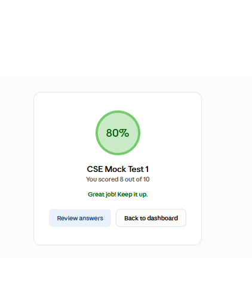

A full-stack placement preparation platform built for students and administrators, with online assessments, timed tests, result tracking, and an AI-powered interview module.

Designed and developed a complete placement preparation application using Angular, Node.js, Express and PostgreSQL. Students can log in, attend timed assessments and view their results, while administrators can manage the assessment workflow.
The next major module is an AI interview system where students select a technical topic and participate in a 30-minute AI-driven interview with automated evaluation and feedback.
Students can select a technical topic and take a 30-minute AI-powered interview. The system evaluates responses and generates structured feedback to help students improve their interview skills.